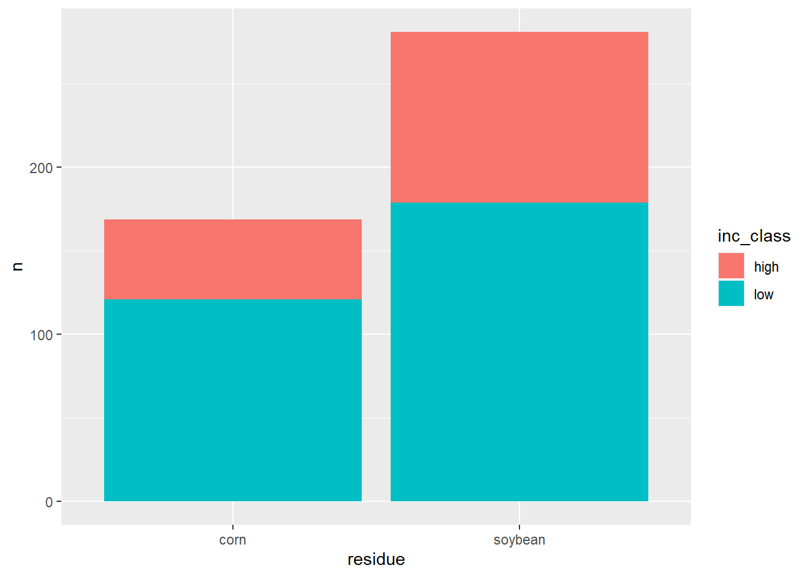

library(tidyverse)
library(dplyr)
library(readxl)
library(ggplot2)
library(janitor)
library(epifitter)Aula15
Variáveis categóricas
Para variaveis resposta categoricas, não se tira a média dos dados, ao inves disso, se monta uma tabela de contigencia e visualiza por meio de grafico de barras/colunas, pois se é sada para ver frequencia de ocorrencias, quando se tem variáveis categóricas nominais.
Dados: Quantas ocorrências tem em cada ano. Cruzando duas variáveis. Quantas espécies dos dados tem em cada ano (função table)
survey <- read_excel("dados-diversos.xlsx","survey")
survey |>
count(year)# A tibble: 3 × 2
year n
<dbl> <int>
1 2009 265
2 2010 216
3 2011 185q <- table(survey$residue, survey$species)#library(janitor)
survey |>
tabyl(year, species) year Fgra Fspp
2009 225 40
2010 187 29
2011 140 45Pacote janitor: Para dar os valores em porcentagem usa-se a função adorn_percentages().
survey |>
filter(residue != "NA") |>
count(residue, species) |>
ggplot(aes(residue, n, fill = species))+
geom_col()
Teste q quadrado:
q <- table(survey$residue, survey$species)
chisq.test(q)
Pearson's Chi-squared test with Yates' continuity correction
data: q
X-squared = 1.1997, df = 1, p-value = 0.2734Hipótese nula: as populações são iguais.
Usa-se o fisher.test(q) quando o número de observações é baixo, algo em torno de 6 ou 7.
A severidade é influenciada pelo resíduo?
q <- table(survey$residue, survey$inc_class)
chisq.test(q)
Pearson's Chi-squared test with Yates' continuity correction
data: q
X-squared = 2.6165, df = 1, p-value = 0.1058survey|>
filter(residue != "NA") |>
count(residue, inc_class) |>
ggplot(aes(residue, n, fill = inc_class))+
geom_col()
Pelo p valor, a classe de severidade independe do resto cultura, ou seja, o resto cultural não influencia na severidade.
Novo conjunto de dados:
curve <- read_excel("dados-diversos.xlsx", "curve")
curve2 <- curve |>
group_by(Irrigation, day) |>
summarize(mean_severity = mean(severity),
sd_severity = sd(severity))`summarise()` has grouped output by 'Irrigation'. You can override using the
`.groups` argument. curve2 |>
ggplot(aes(day, mean_severity, color = Irrigation))+
geom_point()+
geom_errorbar(aes(ymin = mean_severity - sd_severity, ymax = mean_severity + sd_severity, width = 0.01))+
geom_line() curve3 <- curve |>
group_by(Irrigation, rep) |>
summarise(audpc = AUDPC(day, severity,
y_proportion = F)) |>
pivot_wider(1, names_from = Irrigation,
values_from = audpc)`summarise()` has grouped output by 'Irrigation'. You can override using the
`.groups` argument.Warning: Specifying the `id_cols` argument by position was deprecated in tidyr 1.3.0.
ℹ Please explicitly name `id_cols`, like `id_cols = 1`. t.test(curve3$Drip, curve$Furrow)Warning: Unknown or uninitialised column: `Furrow`.
One Sample t-test
data: curve3$Drip
t = 51.206, df = 2, p-value = 0.0003812
alternative hypothesis: true mean is not equal to 0
95 percent confidence interval:
12.26473 14.51493
sample estimates:
mean of x
13.38983 Exercício:
-Carregando o conjunto de dados, mutando a variável lesion size de categórica para numerica, agrupando as variáveis e resumindo os dados:
lesion_size <- read_excel("tan-spot-wheat.xlsx", "lesion_size")
lesion2 <- lesion_size |>
mutate(lesion_size = as.numeric(lesion_size)) |>
group_by(cult, silicio, hai) |>
summarise(mean_lesion = mean(lesion_size), sd_lesion = sd(lesion_size))`summarise()` has grouped output by 'cult', 'silicio'. You can override using
the `.groups` argument.Visualizando os dados graficamente:
lesion2 |>
ggplot(aes(hai, mean_lesion, color = silicio))+
geom_line()+
geom_point()+
geom_errorbar(aes(ymin = mean_lesion - sd_lesion,
ymax = mean_lesion + sd_lesion),
width = 0.01)+
facet_wrap(~cult)+
labs(y = "Lesion size (mm)",
x = "Hours after inoculation (hai)", color = "Treatment")lesion3 <- lesion_size |>
mutate(lesion_size = as.numeric(lesion_size)) |>
group_by(exp, cult, silicio, rep) |>
summarise(audpc = AUDPC(lesion_size, hai))`summarise()` has grouped output by 'exp', 'cult', 'silicio'. You can override
using the `.groups` argument.lesion3 |>
ggplot(aes(cult, audpc, color = silicio))+
geom_boxplot()+
facet_wrap(~ exp)
Teste:
aov1<- aov(audpc ~ exp*cult*silicio, data = lesion3)
summary(aov1) Df Sum Sq Mean Sq F value Pr(>F)
exp 1 54544 54544 0.533 0.470257
cult 1 751290 751290 7.335 0.010281 *
silicio 1 9051552 9051552 88.377 3.15e-11 ***
exp:cult 1 36717 36717 0.359 0.553089
exp:silicio 1 49 49 0.000 0.982615
cult:silicio 1 1412562 1412562 13.792 0.000689 ***
exp:cult:silicio 1 143643 143643 1.403 0.244065
Residuals 36 3687093 102419
---
Signif. codes: 0 '***' 0.001 '**' 0.01 '*' 0.05 '.' 0.1 ' ' 1Se não der significativo, reduz o modelo:
aov1<- aov(audpc ~ cult*silicio, data = lesion3)
summary(aov1) Df Sum Sq Mean Sq F value Pr(>F)
cult 1 751290 751290 7.662 0.00850 **
silicio 1 9051552 9051552 92.315 6.04e-12 ***
cult:silicio 1 1412562 1412562 14.406 0.00049 ***
Residuals 40 3922047 98051
---
Signif. codes: 0 '***' 0.001 '**' 0.01 '*' 0.05 '.' 0.1 ' ' 1Para ver se o modelo está correto, checa as premissas:
library(performance)Warning: package 'performance' was built under R version 4.2.3check_normality(aov1)Warning: Non-normality of residuals detected (p = 0.003).check_heteroscedasticity(aov1)Warning: Heteroscedasticity (non-constant error variance) detected (p = 0.040).Se não atende as premissas, transforma:
aov1<- aov(sqrt(audpc) ~ cult*silicio, data = lesion3)Warning in sqrt(audpc): NaNs produzidossummary(aov1) Df Sum Sq Mean Sq F value Pr(>F)
cult 1 294.0 294.0 13.51 0.000712 ***
silicio 1 2363.9 2363.9 108.65 7.81e-13 ***
cult:silicio 1 526.5 526.5 24.20 1.62e-05 ***
Residuals 39 848.6 21.8
---
Signif. codes: 0 '***' 0.001 '**' 0.01 '*' 0.05 '.' 0.1 ' ' 1
1 observation deleted due to missingnesscheck_normality(aov1)OK: residuals appear as normally distributed (p = 0.146).check_heteroscedasticity(aov1)OK: Error variance appears to be homoscedastic (p = 0.638).library(emmeans)Warning: package 'emmeans' was built under R version 4.2.3m1 <- emmeans(aov1, ~ cult | silicio, type = "response")
m1silicio = Si-:
cult response SE df lower.CL upper.CL
Horizonte 1440 106.8 39 1233 1664
Quartzo 1537 110.3 39 1322 1768
silicio = Si+:
cult response SE df lower.CL upper.CL
Horizonte 897 84.2 39 735 1075
Quartzo 296 50.7 39 202 407
Confidence level used: 0.95
Intervals are back-transformed from the sqrt scale